Пролог |
|
|
Багровые Отголоски (Часть 1) 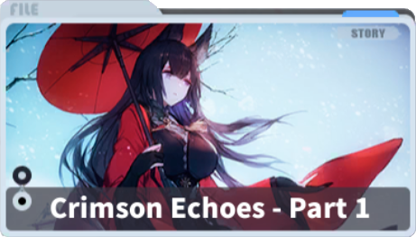 |
Учения в Империи Сакуры. Победитель учений должен стать новым флагманом флота. Побеждает Амаги. Подписано соглашение о том, что два линкора должны быть переоборудованы в авианосцы, остальные списаны. Выбирают Амаги и Акаги. Кага уходит в Зеркальное море погибнуть в бою. Амаги с помощью Хосё спасает её. Куб Мудрости Амаги с дефектом и всё становится только хуже, решают что следующим после Нагато флагманом должна стать Кага. |
|
Альтернативные шахматы 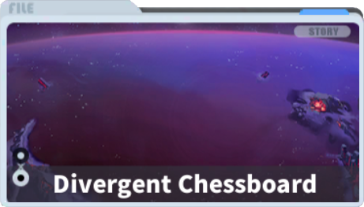 |
В Зеркальном море Пешки сражаются с Белой. С каждой битвой Белая становится всё опытнее и опытнее. Пешке Тирпиц это не нравится, ей снятся сны о каком то сражении у берегов Скандинавии. По итогу когда она проигрывает Белой, она осознаёт то что она Пешка и заперта в этом море. Сирены радуются что предположительно получили Последовательность Пробуждения. Тем временем две подлодки Железной Крови своровали данные сирен и одной удалось уйти. |
|
Ангел Ирис 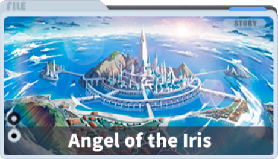 |
День Жоффр в Ортодоксальном Ирис. Слухи о том что руководство Ирис заигрывает и с Королевским Флотом и с Железной Кровью. Банкет с приглашёнными девушками из Королевского Флота. |
|
Глубинный Рефрен (Часть 1) 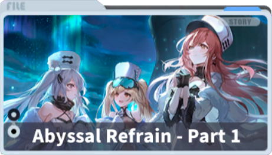 |
Советский Союз организовывает экспедицию для исследования метиорита на дне океана. Он как то связан с Сиренами. Группа во главе с Кронштадт отправляется на подводной лодке к метиориту и застревает там окружённая Сиренами. При исследовании метиорита группа видит видения про Бон Омм Ричард. |
|
Операция «Конвергенция» (Часть 1) 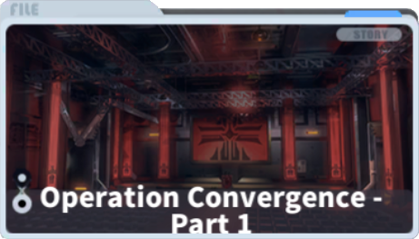 |
Бисмарк тайно передаёт Фридрих дер Гроссе позицию флагмана Железной Крови, так как сама Бисмарк должна потонуть чтобы разорвать колесо судьбы. |
|
Кинжал окутанный пламенем 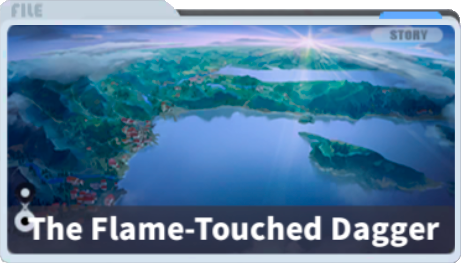 |
Альжери с Фош обсуждают что Сардиния присоеденилась к Багровой оси, и штаб дал им задание наказать их напав на гавань. По итогу гавань они атаковали, но враги были предупреждены и особого урона они не нанесли. Ещё одно подтверждение того что штаб Ирис играет на два фронта. |
|
Свет и Тьма в Ирис (Часть 1) 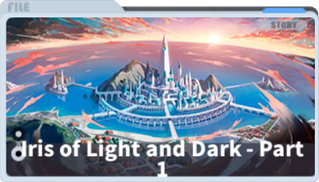 |
Королевский Флот проводит операцию против Ирис, так как они под давлением Железной Крови присоеденились к Багровой Оси. Они добираются до гавани где под защитой Сирен базируется флот во главе с Дюнкерк. Девушки из Королевского Флота предлагают им сдаться, но Тамплиеры Вичья отказываются. Королевский Флот открывает огонь и наносит флоту Вичья огромные повреждения. После этого события Ришелье, находясь на Королевских Островах, объявляет о создании сил сопротивления Ирис Либре. |
|
Имперская трагикомедия 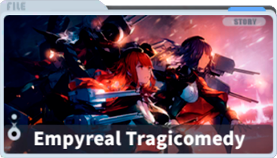 |
Сардинцам не нравится то, что их новые покровители Железная Кровь особо не хотят их защищать. В Средиземноморье разгуливают Сирены. Литторио придумывает план как обратить это в свою пользу. Она провоцирует Королевский Флот на атаку и Сардинцы запрашивают помощь у Железной Крови. Те отказываются помочь. Литторио с Венетто решают что им нужно захватить контроль над Средиземноморьем, но Королевский Флот обводит их вокруг пальца. В конце встречаются с группой из Королевского Флота, проигрывают им и обещают снова присоедениться в Азур Лэйн. |
|
Cкерцо Железа и Крови (Часть 1) 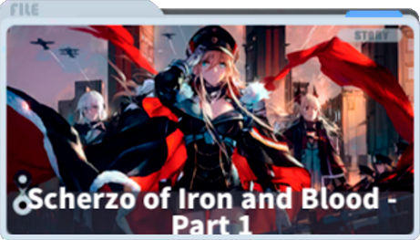 |
Бисмарк выступает перед нацией, обещая что с этого дня всё изменится и они всех победят. На следующий день U556 вдохновлённая выступлением Бисмарк просит благословить подлодку перед первой вылазкой. Бисмарк соглашается и благословляет U556 перед лицом всего флота, чему та очень рада, клянётся в личной верности Бисмарк и обещает с этого момента называть её титулом Лорд и передаёт ей записку, в которой обещает отдать жизнь в любой момент за Бисмарк. |
|
Операция «Конвергенция» (Часть 2) 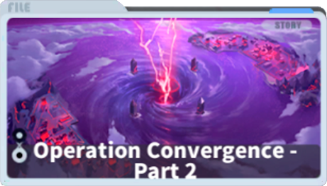 |
Бисмарк отправляет Блюхер и Z16 в Зеркальное море участвовать в эксперименте. Они, при помощи Пешек сражаются с неизвестным противником. Им оказывается Брунгильда, которую никто из них до этого не видел. Их удивляет что Брунгильда не подчиняется Бисмарк. |
|
Основная Кампания - Пролог 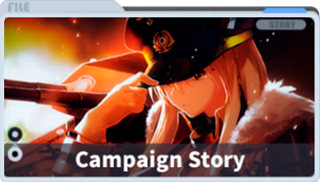 | Отряд сил Королевского Флота натыкается на отряд Железной Крови и по итогу боя Бисмарк топит Худ с одного выстрела. |
|
Cкерцо Железа и Крови (Часть 2) 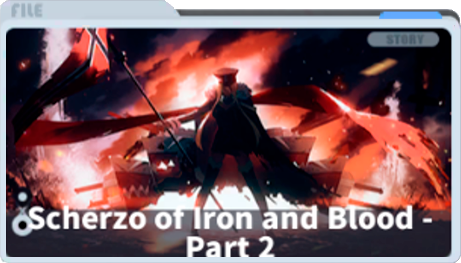 |
Бисмарк и Принц Ойген после боя с Королевским Флотом разделяются. Бисмарк вспоминает как она встречалась с Сиреной Наблюдателем и та дала ей силу, которая должна помочь изменить будущее Железной Крови. По пути домой Бисмарк перехватывает Королевский Флот и наносят ей повреждения. Неожиданно появляется Сирена Тестер и защищает Бисмарк. Тестер морально давит на Бисмарк, доводя её до крайности и заставляя "Пробудиться". Но Бисмарк собрав всю мощь силы, которую ей вручили Сирены пытается уничтожить себя, вместо того чтобы атаковать Королевский Флот. Тестер отступает, а Королевский Флот топит Бисмарк. |
|
Одно Маленькое Обещание 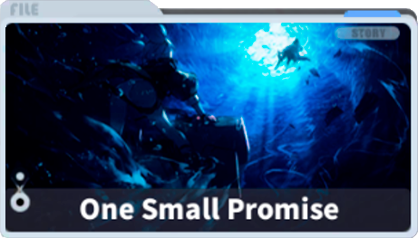 |
Получив благословение от Бисмарк, U556 с U557 выходит на боевое патрулирование. Они получают странный сигнал о помощи, закодированный Энигмой. U556 понимает что сигнал отправила Лорд Бисмарк и спешит на зов, отправив 557 в порт с плохими новостями…. |
|
Операция «Конвергенция» (Часть 3) 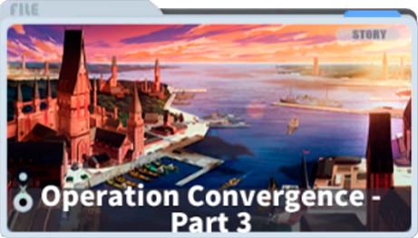 |
Брунгильда окончательно побеждает Блюхер и Z16 с помощью Пешки Ульрих фон Хуттен и завершает Эксперимент. Пешка Бисмарк наоборот ослабела. После чего прибывают Принц Ойген и Фридрих дер Гроссе, чтобы сопроводить их домой. |
|
Тора! Тора! Тора! (1-1 – 1-4) 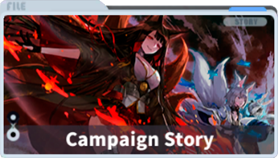 |
Командир участвует в учениях Союза Орла. Звучит сигнал тревоги. На порт напала Империя Сакупы. Командир помогает выстроить оборону. Он встречает Акаги и Кага, которые возглавляют флот нападения.Объявляется, что Империя Сакуры с этого дня присоединяется к Багровой Оси. Акаги обещает Командиру, что это не последняя их встреча. |
|
Битва за Коралловое море (2-1 – 2-4) 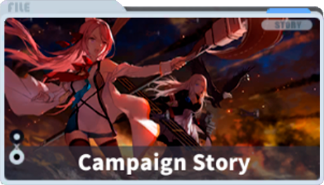 |
Энтерпрайз и Хорнет где то в западном море проводят разведовательную операцию, их замечают и они вступают в бой против сил Сакуры. Лексингтон вступает в бой пртив сил Империи Сакуры в Коралловом море. |
|
Мидуэйские Разборки (3-1 – 3-4) 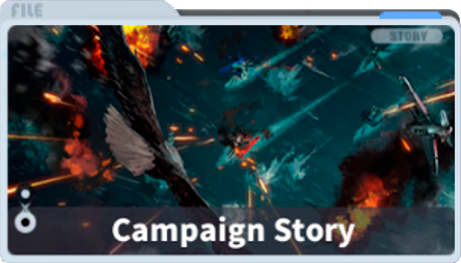 |
Энтерпрайз Хорнет и Йорктаун обнаруживают силы Империи Сакуры и проводят неожиданную контратаку вблизи острова Мидуэй. Силы Союза Орла топят Сорю, повреждают Кага, вынуждая Акаги отступить вместе с ней. Хирю так же проигрывает, но последним усилием вкладывает все силы в один удар и топит Йорктаун. Всемирная история начинает меняться. |
|
Серебряные архивы 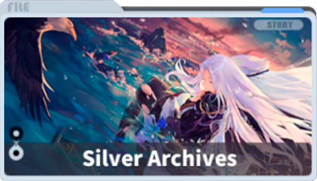 |
Из архивов Союза Орла ясно то что перед нападением Империи Сакуры в регионе появилось много Сирен. Йорктаун перед потоплением уже была повреждена Сиренами. Саратога в разведке видела как Акаги атаковала странной атакой, на секунду появилась Амаги. |
|
Багровые Отголоски (Часть 2) 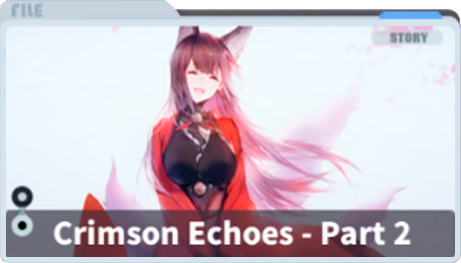 |
После того как Кага получила прямое попадание в бою ранее, она отключилась и ей приснился полу сон – полу видение, про Амаги и учения за пост флагмана. Акаги с Кага направляются в некое «Святилище» куда проникли «маленькие мышки» из Пятого Авианесущего дивизиона. |
|
Посетители в Красном 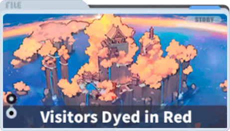 |
Дзуйкаку находит ключ от некого Святилища и отправляется туда с Сёкаку. Шторм их разделяет. Дзуйкаку прорывается сквозь Пешек, добирается до Святилища, там все во главе с Акаги верят в Создателя и приносят ему в жертву души девушек. На Дзуйкаку нападает Пешка Сёкаку, но вдруг начинает её защищать что является признаком Пробуждения. Святилище уничтожается, Акаги с Кагой продали души Сиренам. Всё это на испытательном полигоне Гамма. |
|
Возвращение Богини войны 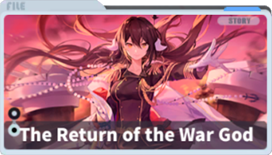 |
Дзуйкаку и Сёкаку в Зеркальном море натыкаются на Сирен, те их побеждают, но появляется Микаса и даёт отпор Сирене несмотря на устаревшее вооружение. Ведь главное не сила орудий, а сила убеждений. |
|
Тёмная дорога домой 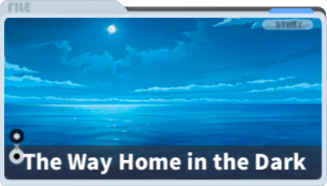 |
Дюнкерк много месяцев провела на ремонте после своего поражения от Королевского Флота и теперь добирается домой, в Тулон через Средиземное море в компании с Тарту и Вокелен. |
|
Свет и Тьма в Ирис (Часть 2) 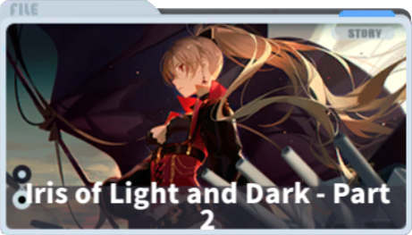 |
Через два года после основания Ирис Либре, Королевский Флот и Союз Орла объединяются чтобы высадиться на берегу Доминиона Вичья. Им это удаётся, и Железная Кровь сразу же нападает на штаб Доминиона Вичья захватывая его. Штаб приказывает оставшимся силам Вичья уйти в Азур Лэйн, но Жан Барт приказывает Тамплиерам затопить себя, за честь. |
|
Падшие Крылья 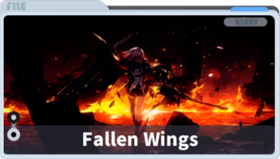 |
Союз Орла принимает странный сигнал, на месте находят разрушенное неизвестно кем Зеркальное море, отбиваются от Сирен и захватывают транспорт Сирен. Сирены используют Энтерпрайз (Код G) в своих экспериментах, но та сбегает. Сцена о запуске плана Магистр. Зеро отправляет Арбитр на разборки. |
Первая Часть |
|
|
Зимняя Корона 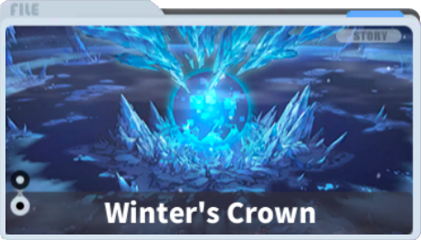 |
В отдаленном Северном море отряд Королевского Флота, только что завершивший свою миссию сопровождения, подвергается нападению невиданных ранее Сирен и Железной крови... Может ли все это быть совпадением? |
|
Стальная Сакура, запятнанная чернилами
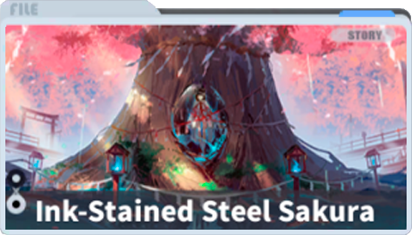 |
Отважные воины Империи Сакуры отправляются в родные края, чтобы спасти своих товарищей. Они не подозревают, что Сирены поджидают их в засаде по пути. |
|
Приближающийся Шторм
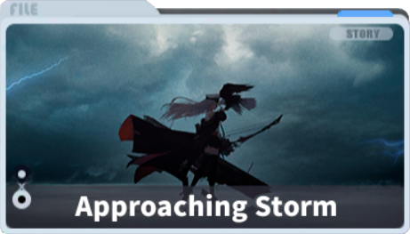 |
Девушки-корабли готовятся встретить Командира в Нью-Йорке. Они не обращают внимания на надвигающийся шторм который скоро разразится. |
|
Пепельный Симулякрум
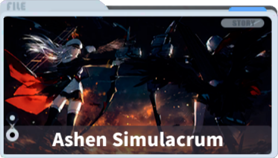 |
Заранее спланированное происшествие и два заранее подготовленных этапа. Открытая песочница и закрытый объект. Только столкнувшись лицом к лицу с прошлым, можно взглянуть в лицо будущему. |
Кружащиеся Лепестки Вишни
 |
Священный камень, известный как Ватацуми, хранится на далеком острове в Империи Сакуры. Когда искатели силы, хранители истины и интриганы собираются в одном месте, начинается новая битва. |
Под Покровом Тумана
 |
Во время путешествия к Панамскому каналу флот невольно попадает в странный туман. |
|
Ассорти Микрослоёв
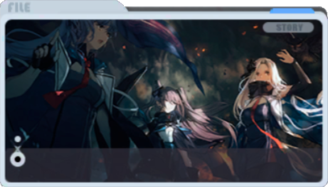 |
Флот пропал без вести в тумане необъяснимого происхождения, флот Энтерпрайз мобилизуется, чтобы найти его источник и спасти друзей. Новые Сирены прибывают, чтобы преградить им путь, а кто-то наблюдают за всем этим. |
|
Увертюра Севера
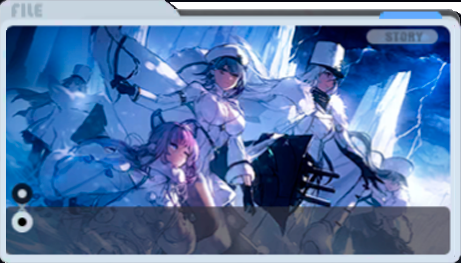 |
Мы подобны воде - вы можете превратить нас в жидкость, заморозить или даже испарить, чтобы мы растворились в холодном зимнем воздухе. Однако, какую бы форму мы ни приняли, наши сердца никогда не изменятся. Товарищи! Объединяйтесь и Стройте! |
 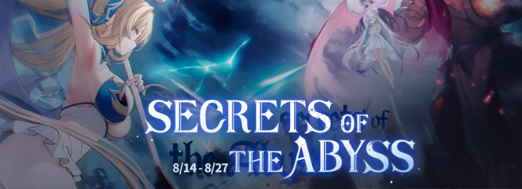
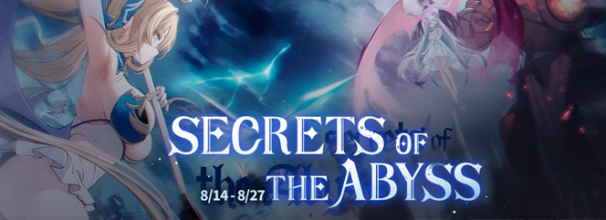